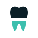

Propuestas para elegir
Dos logos, tres eslóganes
Las dos propuestas comparten el nombre en la letra del sistema y el punto menta como acento. Cambia el símbolo: uno abstracto y uno dental. Ninguna se aplica hasta que elijas.
Propuesta A
AbstractaEl punto de criterio
Una C gruesa que se abre hacia un punto. La C es el recorrido de la atención; el punto, el criterio con que termina cada paso. Es la misma sonda que hoy dibuja la C en la pantalla de carga: la marca y la animación cuentan lo mismo. Sin diente: se lee igual en la clínica, en la universidad y a 16 px.
Tamaños reales
En la pestaña del navegador (16 px)
Las dos líneas de producto con el mismo símbolo.
Sobre la sección oscura.
Propuesta B
DentalLa raíz
Un molar simple en dos piezas: la corona, que es lo que se ve, y la raíz en menta, que es lo que lo sostiene. La idea: la evidencia es la raíz. El corte entre las dos es el límite amelocementario. Es inconfundiblemente dental: una administradora sabe en un segundo que es un software para su clínica.

Tamaños reales
En la pestaña del navegador (16 px)
Las dos líneas de producto con el mismo símbolo.
Sobre la sección oscura.
Lado a lado
A 16 px, con el actual
Actual
 16
16La muela se vuelve una mancha.
A · El punto
La C y el punto siguen separados.
B · La raíz
Se lee como diente; el corte se suaviza.
En el celular
Eslogan
Tres opciones
Va como título de la portada, sobre la frase que explica qué es Criterium y los dos caminos. La prueba: que una administradora entienda en 5 segundos qué es y qué lo hace distinto.
1
✓ RecomendadoDe la cita a la caja, con la misma guía.
Dice lo que hace distinto a Criterium: la guía del procedimiento recorre toda la atención. «Cita» y «caja» son palabras de la administradora: orden y plata. Funciona para los dos caminos (el estudiante aprende con la misma guía que después usa en su clínica).
2
Cada paso, con criterio.
El tuyo, pulido. Corto, juega con el nombre y dura años. Pero no dice qué es: sirve mejor como firma bajo el logo (pie de página, presentaciones, redes) que como título.
3
La guía clínica que ordena tu clínica.
Nuevo. Le habla directo a la administradora («ordena») y se recuerda por el juego de palabras. Deja fuera a estudiantes y docentes: sirve como título del camino «Soy clínica».
Descarté «De la guía al box, todo conectado» (con el 1 queda repetida) y «Atiende con evidencia. Gestiona sin papeles» (clara, pero «sin papeles» lo promete cualquier software de gestión).